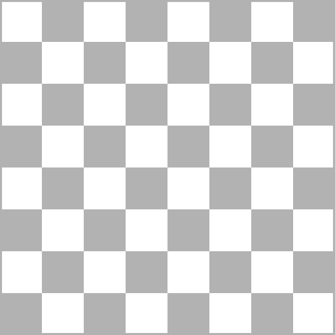

Problem set 7
Due by 11:59 PM on Monday, July 24, 2023
Submit this as a PDF on iCollege. You can use whatever you want to make your drawings, including Gravit Designer, Adobe Illustrator, Excel, PowerPoint, Microsoft Paint, or photographed/scanned pen and paper. I highly recommend using Desmos too!
Cite your sources and show your work.
1
Marcel Fafchamps and Bart Minten, two economists, studied grain markets in Madagascar in 1997, where the legal institutions for enforcing property rights and contracts were weak.1 Despite this, they found that theft and breach of contract were rare. The grain traders avoided theft by keeping their stocks very low, and if necessary, sleeping in the grain stores. They refrained from employing additional workers for fear of employee-related theft. When transporting their goods, they paid protection money and traveled in convoy. Most transactions were paid in cash. Trust was established through repeated interaction with the same traders.
Recall Elinor Ostrom’s work on the fishermen in Alanya, Turkey.2 Do the findings from Fafchamps and Minten (and Ostrom) suggest that strong legal institutions are not necessary for markets to work? How so? (≈50 words)
Consider some market transactions in which you have been involved. Could these markets work in the absence of a legal framework, and how would they be different if they did? (≈40 words)
Can you think of any examples in which repeated interaction helps to facilitate market transactions? (≈40 words)
Why might repeated interaction be important even when a legal framework is present? (≈30 words)
What role can informal institutions play in these kind of interactions? (≈30 words)
2
Discuss whether the following statements are true or false and explain why in ≈35 words each:
- The Coase Theorem states that every type of externality can be solved by private negotiation.
- Free riding becomes more of a problem as more people benefit from a public good.
- When a good imposes a negative externality on society, the government should completely ban the production and exchange of that good.
- Because their life is on the line, car drivers will exert a socially efficient level of care while driving.
3
Get a checkerboard, 22 pennies, and 22 dimes (or 22 of something other than pennies). Randomly place the pennies and times on the squares on the board. Do not use the four corner squares.
Draw the resulting pattern (use colors for the coin types, or symbols like • for pennies and # for dimes, or whatever):
Now pretend that each penny wants to live in a “neighborhood” (the nine squares of which they are the center) that has at least as many pennies as dimes. Start at one corner of the board and look at the first penny. Determine the makeup of its neighbors. If there are too many dimes around the penny, move the penny to the closest acceptable square. Move on to the next penny and check its neighborhood, moving it to a new area if necessary. Do this for all the pennies and then all the dimes.
Draw the resulting pattern:
What does this example have to do with residential and school segregation? (≈40 words)
4
Suppose the demand for Coca Cola products in Atlanta is
\[ P = \frac{-Q + 10,000}{10,000} \] where Q is the number of cans of soft drink purchased per day and P is the price per can. The market supply curve (or private marginal cost) is horizontal at $0.75 per can (the equation is thus \(P = 0.75\)).
Given existing habits and disposal and recycling technology, it has been estimated that the average soft drink can ends up costing 10 cents in the form of unsightly litter and pick-up costs. The social marginal cost is thus \(P = 0.85\).
- Explain how the concept of market failure applies to this example (≈20 words). Illustrate your explanation with a graph showing the extent of this failure. (Hint: think about social vs. private marginal costs)
- Can society’s loss from this market failure be quantified (≈10 words)? If so, calculate it as precisely as possible and indicate it in your illustration. (Hint: think about deadweight loss)
- How could taxation be used to overcome this market failure? (≈25 words)
- What are the shortcomings of this solution? (≈25 words)
- What alternative policies might be worth considering? (≈30 words)
5
Mount Everest is crowded during climbing season. Every year more groups seek to summit the world’s highest mountain. The crowding increases the danger for all and diminishes the experience. The government of Nepal decides that it has issued too many climbing permits in the past, and is considering several schemes for reducing by half the number of permits (or climbers). Here are the three schemes it is considering:
- A. Issue non-transferable permits to the firms that organize Everest expeditions equal (in each case) to half the number of climbers that were their customers last year
- B. Same as A, but allow the firms to transfer (sell) the permits they are allocated by the government to other firms
- C. Auction off the same total number of permits in A and B to the highest bidders
Answer these questions:
Without any regulation, why would we expect too many climbers on the mountain? What kind of market failure is this? (≈20 words)
For each of the schemes, describe (1) what you expect the consequences would be on overcrowding, and (2) what the efficiency and distributional consequences might be (i.e. discuss Pareto efficiency and fairness, thinking about procedural, substantive, and Rawlsian fairness). (≈60 words)
In what sense is B a better scheme than A? (≈20 words)
Compare B and C. What difference would there be in the price of a permit? What difference would there be in the final distribution of permits among professional guides? (≈30 words)
Propose two policy alternatives the Nepalese government could use instead of these permit schemes. Under what conditions would they work better or worse? (≈60 words)
6
In two-car automobile accidents, passengers in the larger vehicle are significantly more likely to survive than passengers in the smaller vehicle. Some politicians and lobbyists have argued that this provides a rationale for encouraging the sale of larger vehicles and discouraging legislation that would induce automobile manufacturers to make smaller cars. Evaluate this argument using the concept of externalities. Are these politicians and lobbyists right? Answer in ≈40 words.
7
Suppose that the negative externalities associated with hog farming (including water pollution and airborne odors) are $5 per hog given current techniques.
- Explain why “too many” hogs will be produced (≈20 words). In your answer use terms like “private cost” and “social cost.” Draw a diagram of the hog market that illustrates your answer. There are no actual equations here, so you can draw the lines however you want (it’ll be easiest if you just have lines that go diagonally up (supply) and diagonally down (demand))
- One proposal for solving this problem is to impose a tax of $5. Explain the effect of such a tax and illustrate it on your diagram (≈20 words).
- What are the shortcomings of this solution? (≈20 words)
- What alternative policies might be worth considering? (≈30 words)
References
Fafchamps, Marcel, and Bart Minten. “Relationships and Traders in Madagascar.” Journal of Development Studies 35, no. 6 (August 1999): 1–35. https://doi.org/10.1080/00220389908422600.
Ostrom, Elinor. Governing the Commons: The Evolution of Institutions for Collective Action. Cambridge: Cambridge University Press, 1990.
Footnotes
Marcel Fafchamps and Bart Minten, “Relationships and Traders in Madagascar,” Journal of Development Studies 35, no. 6 (August 1999): 1–35, https://doi.org/10.1080/00220389908422600.↩︎
Elinor Ostrom, Governing the Commons: The Evolution of Institutions for Collective Action (Cambridge: Cambridge University Press, 1990).↩︎